PSMC temperatures check
Summary
| Date start | 2008:307:12:54:26.141 |
| Date stop | 2008:315:10:06:38.024 |
| 1PDEAAT status | OK (limit = 52.5 C) |
| 1PIN1AT status | OK (limit = 36.5 C) |
| Run time | Tue Oct 13 11:48:21 2009 by jeanconn |
| Run log | run.dat |
| Temperatures | temperatures.dat |
| States | states.dat |
No 1PDEAAT Violations
No 1PIN1AT Violations
 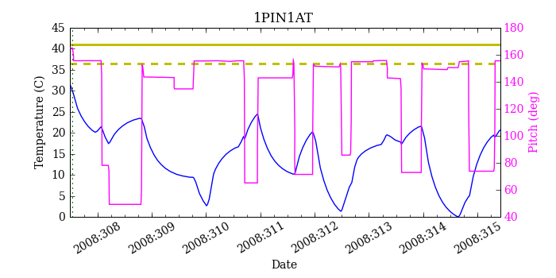
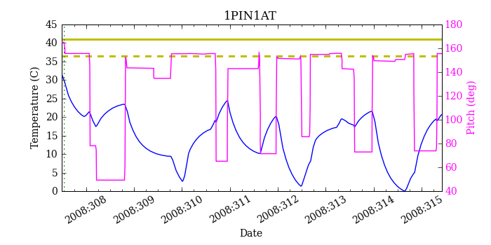

PSMC Model Validation
MSID quantiles
| MSID | 1% | 5% | 16% | 50% | 84% | 95% | 99% |
|---|---|---|---|---|---|---|---|
| 1PDEAAT | -1.49 | -0.76 | 0.32 | 1.89 | 4.92 | 8.08 | 8.21 |
| 1PIN1AT | -2.49 | -1.47 | -0.26 | 1.64 | 3.35 | 4.39 | 5.61 |
| AOSARES1 | -2.126 | -0.132 | -0.033 | 0.035 | 0.160 | 0.185 | 2.300 |
| POWER | -7.09 | -3.40 | -1.28 | 0.89 | 4.03 | 6.02 | 8.87 |
| TSCPOS | -1 | -1 | -1 | 0 | 0 | 0 | 0 |
Validation Violations
| MSID | Quantile | Value | Limit |
|---|---|---|---|
| 1PDEAAT | 50 | 1.89 | 1.00 |
| 1PDEAAT | 99 | 8.21 | 5.50 |
| 1PIN1AT | 99 | 5.61 | 5.50 |
1PDEAAT
Red = telemetry, blue = model
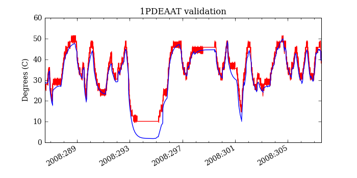

1PIN1AT
Red = telemetry, blue = model
 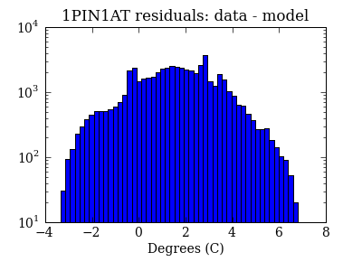
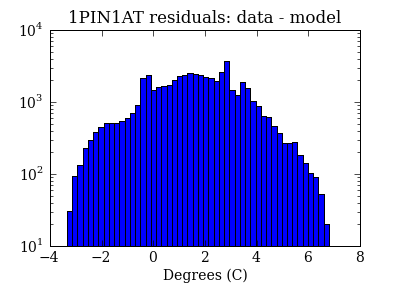

AOSARES1
Red = telemetry, blue = model
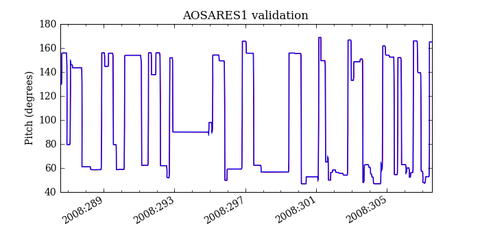 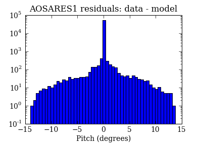
POWER
Red = telemetry, blue = model
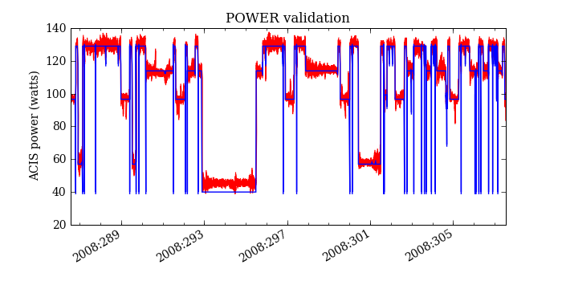 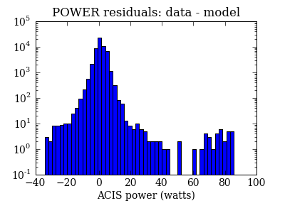 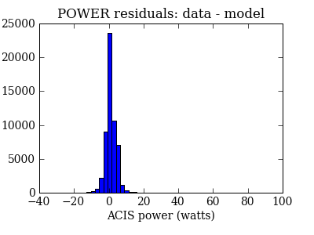TSCPOS
Red = telemetry, blue = model
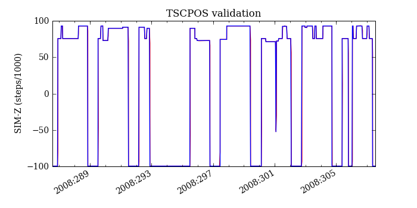 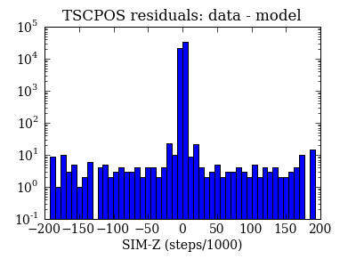 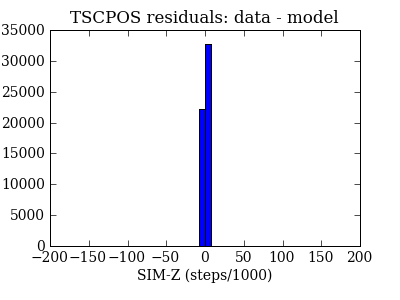